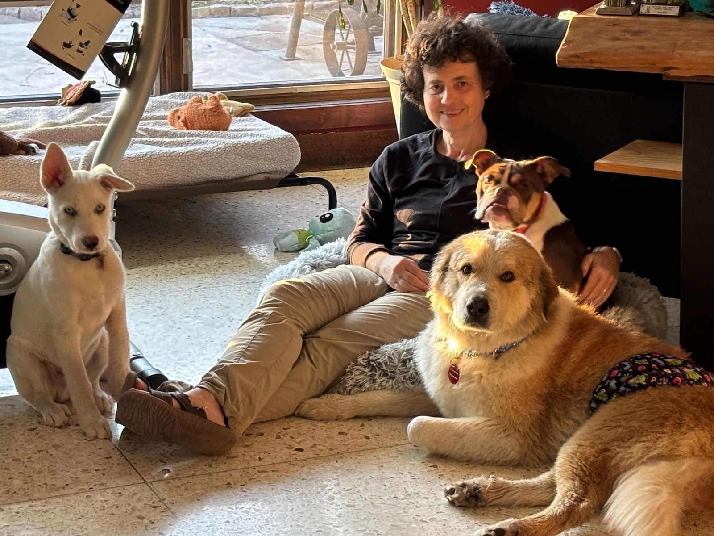

Dog Rescue
Outside the university, I volunteer with Dallas Street Dog Advocates (opens in a new tab) (DSDA), where I serve on the board and as a foster coordinator.

About DSDA
DSDA is a volunteer-run 501(c)(3) dog rescue that has been taking dogs off the streets of Dallas and the surrounding rural areas since 2017. Every dog gets medical care, rehabilitation and training in a foster home before being matched with a permanent family.
My own role centers on fostering: matching dogs with foster homes, supporting fosters through the hard cases, and building tools that help a small volunteer organization run well. Our household usually includes a foster dog or two alongside our own dogs.
How you can help
Rescue meets research
Animal rescue is, among other things, an operations problem: limited foster capacity, uncertain intake and adoption flows, and hard choices about where resources do the most good. In Saving Lives in Animal Shelters: Strategic Time Allocation Under Capacity Constraints, with Katalia Chen and Ernan Haruvy, we use thirteen years of records on more than 200,000 dogs at Dallas Animal Services to study how a municipal shelter should divide its limited kennel space, and what actually raises the number of dogs who leave alive. (Research)
I am also a guest editor of a Journal of Operations Management special issue, Using OM to Confront Challenges in Underexplored Social Contexts (opens in a new tab), which explicitly invites research on animal shelters and rescue networks.